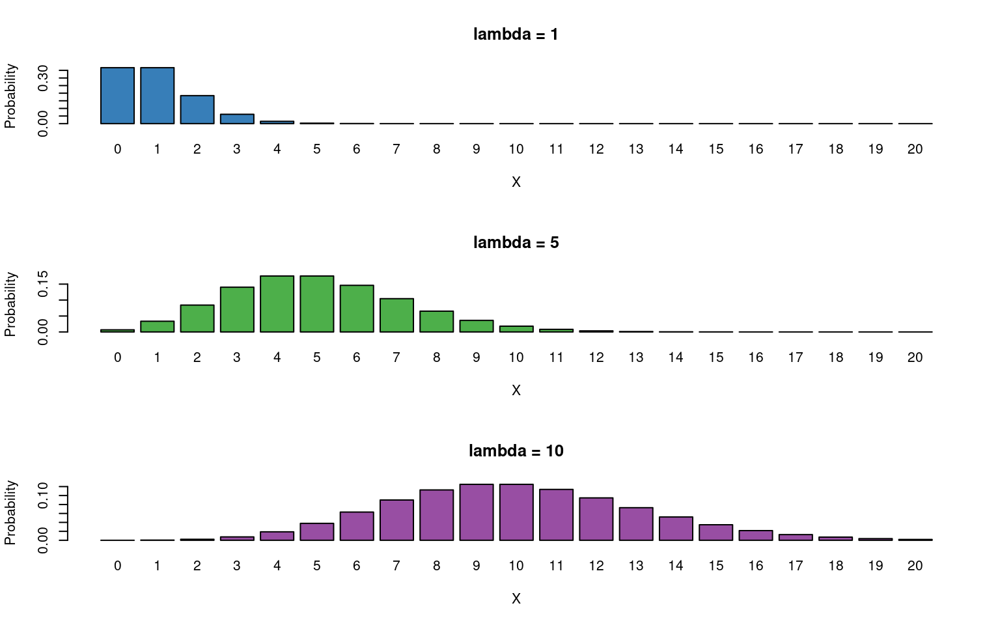
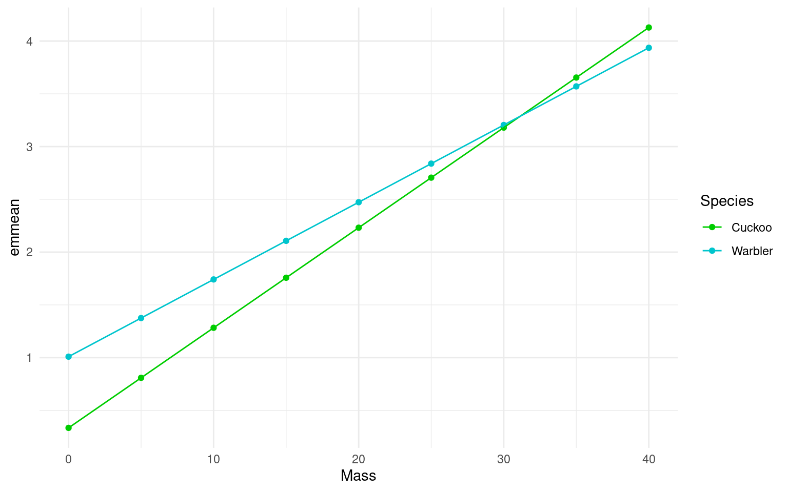
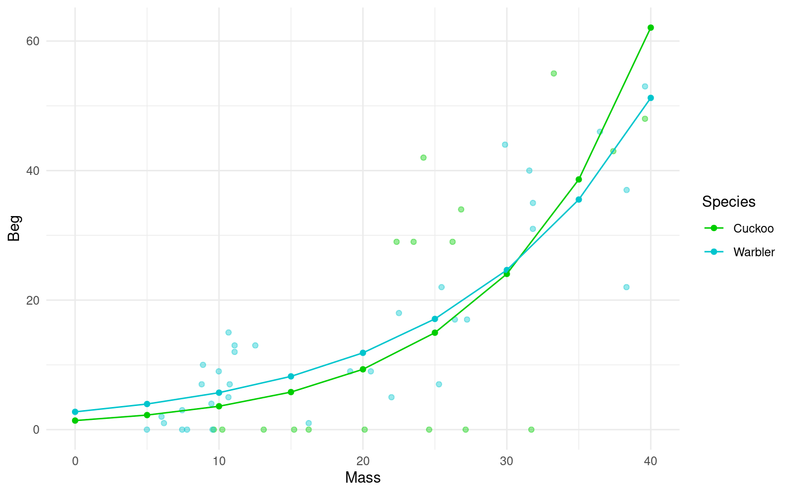

15 Poisson regression (for count data or rate data)
Count or rate data are ubiquitous in the life sciences (e.g number of parasites per microlitre of blood, number of species counted in a particular area). These type of data are discrete and non-negative. In such cases assuming our response variable to be normally distributed is not typically sensible. The Poisson distribution lets us model count data explicitly.
Recall the simple linear regression case (i.e a GLM with a Gaussian error structure and identity link). For the sake of clarity let’s consider a single explanatory variable where \(\mu\) is the mean for Y:
\[ \begin{aligned} \mu & = \beta_0 + \beta_1X \end{aligned} \]
The mean function is unconstrained, i.e the value of \(\beta_0 + \beta_1X\) can range from \(-\infty\) to \(+\infty\). If we want to model count data we therefore want to constrain this mean to be positive only. Mathematically we can do this by taking the logarithm of the mean (the log is the default link for the Poisson distribution). We then assume our count data variance to be Poisson distributed (a discrete, non-negative distribution), to obtain our Poisson regression model (to be consistent with the statistics literature we will rename \(\mu\) to \(\lambda\)):
\[ \begin{aligned} Y & \sim \mathcal{Pois}(\lambda) \\ \log{\lambda} & = \beta_0 + \beta_1X \end{aligned} \]
Note - the relationship between the mean and the data is modelled by Poisson variance. The relationship between the predictors and the mean is modelled by a log transformation.
The Poisson distribution has the following characteristics:
- Discrete variable, defined on the range \(0, 1, \dots, \infty\).
- A single rate parameter \(\lambda\), where \(\lambda > 0\).
-
Mean = \(\lambda\)
- Variance = \(\lambda\)
So we model the variance as equal to the mean - as the mean increases so does the variance.

So for the Poisson regression case we assume that the mean and variance are the same. Hence, as the mean increases, the variance increases also (heteroscedascity). This may or may not be a sensible assumption so watch out! Just because a Poisson distribution usually fits well for count data, doesn’t mean that a Gaussian distribution can’t always work.
Recall the link function between the predictors and the mean and the rules of logarithms (if \(\log{\lambda} = k\)(value of predictors), then \(\lambda = e^k\)):
\[ \begin{aligned} \log{\lambda} & = \beta_0 + \beta_1X \\ \lambda & = e^{\beta_0 + \beta_1X } \end{aligned} \] Thus we are effectively modelling the observed counts (on the original scale) using an exponential mean function.
15.1 Example: Cuckoos

In a study by Kilner et al. (1999), the authors studied the begging rate of nestlings in relation to total mass of the brood of reed warbler chicks and cuckoo chicks. The question of interest is:
How does nestling mass affect begging rates between the different species?
| Mass | Beg | Species |
|---|---|---|
| 9.637522 | 0 | Cuckoo |
| 10.229151 | 0 | Cuckoo |
| 13.103706 | 0 | Cuckoo |
| 15.217391 | 0 | Cuckoo |
| 16.231884 | 0 | Cuckoo |
| 20.120773 | 0 | Cuckoo |
The data columns are:
- Mass: nestling mass of chick in grams
- Beg: begging calls per 6 secs
- Species: Warbler or Cuckoo
There seem to be a relationship between mass and begging calls and it could be different between species. It is tempting to fit a linear model to this data. In fact, this is what the authors of the original paper did; reed warbler chicks (solid circles, dashed fitted line) and cuckoo chick (open circles, solid fitted line):

This model is inadequate. It is predicting negative begging calls within the range of the observed data, which clearly does not make any sense.
Let us display the model diagnostics plots for this linear model.
The residuals plot depicts a strong “funnelling” effect, highlighting that the model assumptions are violated. We should therefore try a different model structure.
The response variable in this case is a classic count data: discrete and bounded below by zero (i.e we cannot have negative counts). We will therefore try a Poisson model using the canonical log link function for the mean:
\[ \log{\lambda} = \beta_0 + \beta_1 M_i + \beta_2 S_i + \beta_3 M_i S_i \]
where \(M_i\) is nestling mass and \(S_i\) a dummy variable
\[ S_i = \left\{\begin{array}{ll} 1 & \mbox{if $i$ is warbler},\\ 0 & \mbox{otherwise}. \end{array} \right. \]
The term \(M_iS_i\) is an interaction term. Think of this as an additional explanatory variable in our model. Effectively it lets us have different slopes for different species (without an interaction term we assume that both species have the same slope for the relationship between begging rate and mass, and only the intercept differ).
The mean regression lines for the two species look like this:
- Cuckoo (\(S_i=0\))
\[ \begin{aligned} \log{\lambda} & = \beta_0 + \beta_1 M_i + (\beta_2 \times 0) + (\beta_3 \times M_i \times 0)\\ \log{\lambda} & = \beta_0 + \beta_1 M_i \end{aligned} \]
Intercept = \(\beta_0\), Gradient = \(\beta_1\)
Warbler (\(S_i=1\))
\[ \begin{aligned} \log{\lambda} & = \beta_0 + \beta_1 M_i + (\beta_2 \times 1) + (\beta_3 \times M_i \times 1)\\ \log{\lambda} & = \beta_0 + \beta_1 M_i + \beta_2 + \beta_3M_i\\ \end{aligned} \]
15.2 Activity 1: Fit the model
Fit a Poisson GLM
Fit the same model but with the
glm()functionSet the family to poisson
cuckoo_glm1 <- glm(Beg ~ Mass + Species + Mass:Species, data=cuckoo, family=poisson(link="log"))
summary(cuckoo_glm1)
Call:
glm(formula = Beg ~ Mass + Species + Mass:Species, family = poisson(link = "log"),
data = cuckoo)
Coefficients:
Estimate Std. Error z value Pr(>|z|)
(Intercept) 0.334475 0.227143 1.473 0.14088
Mass 0.094847 0.007261 13.062 < 2e-16 ***
SpeciesWarbler 0.674820 0.259217 2.603 0.00923 **
Mass:SpeciesWarbler -0.021673 0.008389 -2.584 0.00978 **
---
Signif. codes: 0 '***' 0.001 '**' 0.01 '*' 0.05 '.' 0.1 ' ' 1
(Dispersion parameter for poisson family taken to be 1)
Null deviance: 970.08 on 50 degrees of freedom
Residual deviance: 436.05 on 47 degrees of freedom
AIC: 615.83
Number of Fisher Scoring iterations: 6Note there appears to be a negative interaction effect for Species:Mass, indicating that Begging calls do not increase with mass as much as you would expect for Warblers as compared to Cuckoos.
15.3 Plot the mean regression line for each species:
When we have fitted a model we can use it to generate predictions and see the fit of the regression line (on a log scale)
Plot the mean regression for each species
- Use the emmeans function to generate mean beg rates for different mass + species values
means <- emmeans::emmeans(cuckoo_glm1,
specs = ~ Mass + Species + Mass:Species,
at = list(Mass = seq(0,40, by = 5))) |>
as_tibble()
ggplot(data = means, aes(x=Mass, y= emmean, colour=Species)) +
geom_point() +
geom_line()+
scale_colour_manual(values=c("green3","turquoise3"))+
theme_minimal()
However, it can be more useful to view data on the “response” or “original” scale. Once a model has been fitted we can “back-transform” estimates to produce predicitons on a non-linear response. In this case exponentiating the log-term.
Plot the mean regression for each species on the response scale
Use the emmeans function to generate mean beg rates for different mass + species values
This time include the argument `type = “response”
Include raw data points as well
Use the help menu if needed
means_response <- emmeans::emmeans(cuckoo_glm1,
specs = ~ Mass + Species + Mass:Species,
at = list(Mass = seq(0,40, by = 5)),
type = "response") |>
as_tibble()
ggplot(data = means_response, aes(x=Mass, y= rate, colour=Species)) +
geom_point(data = cuckoo,
aes(y = Beg,
x = Mass,
colour = Species),
alpha = .4) +
geom_point() +
geom_line()+
scale_colour_manual(values=c("green3","turquoise3"))+
theme_minimal()
15.3.1 Model checks
Before attempting to interpret our model, we should check that it meets model assumptions and is a good fit for our data. Unlike with OLS linear models, we can only use visual checks - we can no longer carry out checks for normality or heterogeneity as these no longer apply.
Discuss the model fit with a classmate
Does the QQplot show deviance residuals are ok?
How is the homogeneity of variance?
Are there collinearity issues
Are there any influential observations?
Is dispersion appropriate for a Poisson model?
What is the predictive check like?
- Does the QQplot show deviance residuals are ok?
The QQplot is standardised “deviance” residuals - these show the residuals appear to fit well with a Poisson distribution
- How is the homogeneity of variance?
The trend line can be misleading, while not perfect there is generally homogeneity - perhaps some clumping at low values
- Are there collinearity issues
Technically yes - but this is because one of our terms is an interaction (a composite of main effects) and can be ignored
- Are there any influential observations?
Yes there are four mildly influential observations - outliers can removed from models and compared to a reduced model to check “sensitivity”. But outliers may resolve themselves if other issues are dealt with
- Is dispersion appropriate for a Poisson model?
This graph is new it looks at observed variance and whether it follows model predictions. This shows that observed variance is generally higher than predicted by the model. This may indicate our model has “overdispersion”.
- What is the predictive check like?
Generally good - but the model appears to underpredict zeroes.
15.3.2 Model Summary
Call:
glm(formula = Beg ~ Mass + Species + Mass:Species, family = poisson(link = "log"),
data = cuckoo)
Coefficients:
Estimate Std. Error z value Pr(>|z|)
(Intercept) 0.334475 0.227143 1.473 0.14088
Mass 0.094847 0.007261 13.062 < 2e-16 ***
SpeciesWarbler 0.674820 0.259217 2.603 0.00923 **
Mass:SpeciesWarbler -0.021673 0.008389 -2.584 0.00978 **
---
Signif. codes: 0 '***' 0.001 '**' 0.01 '*' 0.05 '.' 0.1 ' ' 1
(Dispersion parameter for poisson family taken to be 1)
Null deviance: 970.08 on 50 degrees of freedom
Residual deviance: 436.05 on 47 degrees of freedom
AIC: 615.83
Number of Fisher Scoring iterations: 6A reminder of how to interpret the regression coefficients of a model with an interaction term
Intercept = \(\beta 0\) (intercept for the reference or baseline so here the log of the mean number of begging calls for cuckoos when mass is 0)
Mass = \(\beta1\) (slope: the change in the log mean count of begging calls for every gram of bodyweight for cuckoos)
SpeciesWarbler = \(\beta2\) (the log mean increase/decrease in begging call rate of the warblers relative to cuckoos)
Mass:SpeciesWarbler =\(\beta3\) (the log mean increase/decrease in the slope for warblers relative to cuckoos)
Note
Because this is a Poisson distribution where variance is fixed with the mean we are using z scores. Estimates are on a log scale because of the link function - this means so are any S.E. or confidence intervals
15.3.3 Estimates and Intervals
Remember that not only is this Poisson model fitting variance using a Poisson and not Normal distribution. It is also relating the predictors to the response variable with a “log-link” this means we need to exponentiate our estimates to get them on the same scale as the response (y) variable. Until you do this all the model estimates are logn(y).
exp(coef(cuckoo_glm1)[1]) ### Intercept - Incidence rate at mean mass, and Species = Cuckoo
exp(coef(cuckoo_glm1)[2]) ### Change in the average incidence rate with Mass
exp(coef(cuckoo_glm1)[3]) ### Change in the incidence rate intercept when Species = Warbler and Mass = 0
exp(coef(cuckoo_glm1)[4]) ### The extra change in incidence rate for each unit increase in Mass when Species = Warbler (the interaction effect)(Intercept)
1.397207
Mass
1.09949
SpeciesWarbler
1.963679
Mass:SpeciesWarbler
0.9785598 Luckily when you tidy your models up with broom you can specify that you want to put model predictions on the response variable scale by specifying exponentiate = T which will remove the log transformation, and allow easy calculation of confidence intervals.
| term | estimate | std.error | statistic | p.value | conf.low | conf.high |
|---|---|---|---|---|---|---|
| (Intercept) | 1.3972071 | 0.2271431 | 1.472531 | 0.1408775 | 0.8858795 | 2.1589962 |
| Mass | 1.0994905 | 0.0072615 | 13.061667 | 0.0000000 | 1.0841087 | 1.1154266 |
| SpeciesWarbler | 1.9636787 | 0.2592166 | 2.603304 | 0.0092330 | 1.1889064 | 3.2864493 |
| Mass:SpeciesWarbler | 0.9785598 | 0.0083890 | -2.583559 | 0.0097787 | 0.9625068 | 0.9946969 |
15.3.4 Interpretation
It is very important to remember whether you are describing the results on the log-link scale or the original scale. It would usually make more sense to provide answers on the original scale, but this means you must first exponentiate the relationship between response predictors as described above when writing the results.
Warning
The default coefficients from the model summary are on a log scale, and are additive as such these can be added and subtracted from each other (just like ordinary least squares regression) to work out log-estimates. BUT if you exponentiate the terms of the model you get values on the ‘response’ scale, but these are now changes in ‘rate’ and are multiplicative.
Also remember that as Poisson models have ‘fixed variance’ z- and Chisquare distributions are used instead of t- and F.
In this example we wished to infer the relationship between begging rates and mass in these two species.
I hypothesised that the rate of begging in chicks would increase as their body size increased. Interestingly I found there was a significant interaction effect with mass and species, where Warbler chicks increased their calling rate with mass at a rate that was only 0.98 [95%CI: 0.96-0.99] that of Cuckoo chicks (Poisson GLM: \(\chi^2\)1,47 = 6.77, P = 0.009). This meant that while at hatching Warbler chicks start with a mean call rate that is higher than their parasitic brood mates, this quickly reverses as they grow.
# For a fixed mean-variance model we use a Chisquare distribution
drop1(cuckoo_glm1, test = "Chisq")
# emmeans can be another handy function - if you specify response then here it provideds the average call rate for each species, at the average value for any continuous measures - so here the average call rate for both species at an average body mass of 20.3
emmeans::emmeans(cuckoo_glm1, specs = ~ Species:Mass, type = "response")| Df | Deviance | AIC | LRT | Pr(>Chi) | |
|---|---|---|---|---|---|
| NA | 436.0458 | 615.8282 | NA | NA | |
| Mass:Species | 1 | 442.8118 | 620.5942 | 6.765991 | 0.0092911 |
Species Mass rate SE df asymp.LCL asymp.UCL
Cuckoo 20.3 9.61 0.884 Inf 8.03 11.5
Warbler 20.3 12.15 0.658 Inf 10.93 13.5
Confidence level used: 0.95
Intervals are back-transformed from the log scale 15.4 Overdispersion
There is one extra check we need to apply to a Poisson model and that’s for overdispersion
Poisson (and binomial models) assume that the variance is equal to the mean.
However, if there is residual deviance that is bigger than the residual degrees of freedom then there is more variance than we expect from the prediction of the mean by our model.
Overdispersion in Poisson models can be diagnosed by \(\frac{residual~deviance}{residual~degrees~of~freedom}\) which from our example here ‘summary()’ is \(\frac{436}{47} = 9.3\)
Overdispersion statistic values > 1 = Overdispersed
Overdispersion is a result of larger than expected variance for that mean under a Poisson distribution, this is clearly an issue with our model!
Model checks that helped indicate this would be an issue was the “Misspecified dispersion” plot. We can also check whether this misspecified dispersion meets a formal threshold for overdispersion with a function:
# Overdispersion test
dispersion ratio = 7.724
Pearson's Chi-Squared = 363.036
p-value = < 0.00115.4.1 Dealing with overdispersion
Luckily a simple fix is to fit a quasi-likelihood model which accounts for this, think of “quasi” as “sort of but not completely” Poisson.
cuckoo_glm2 <- glm(Beg ~ Mass+Species+Mass:Species, data=cuckoo, family=quasipoisson(link="log"))
summary(cuckoo_glm2)
Call:
glm(formula = Beg ~ Mass + Species + Mass:Species, family = quasipoisson(link = "log"),
data = cuckoo)
Coefficients:
Estimate Std. Error t value Pr(>|t|)
(Intercept) 0.33448 0.63129 0.530 0.599
Mass 0.09485 0.02018 4.700 2.3e-05 ***
SpeciesWarbler 0.67482 0.72043 0.937 0.354
Mass:SpeciesWarbler -0.02167 0.02332 -0.930 0.357
---
Signif. codes: 0 '***' 0.001 '**' 0.01 '*' 0.05 '.' 0.1 ' ' 1
(Dispersion parameter for quasipoisson family taken to be 7.7242)
Null deviance: 970.08 on 50 degrees of freedom
Residual deviance: 436.05 on 47 degrees of freedom
AIC: NA
Number of Fisher Scoring iterations: 6Compare this to the first glm - Dispersion parameter was 1. (Mean and variance are assumed to be identical). Here the dispersion parameter is what? This parameter indicates by how much more variance increases over the mean.
As you can see, while none of the estimates have changed, the standard errors (and therefore our confidence intervals) have, this accounts for the greater than expected uncertainty we saw with the deviance, and applies a more cautious estimate of uncertainty. The interaction effect appears to no longer be significant at \(\alpha\) = 0.05, now that we have wider standard errors.
Warning
Because we are now estimating the variance again, the test statistics have reverted to t distributions and anova and drop1 functions should specify the F-test again.
15.5 Activity 3: Write-up
How would you write up this up?
Try and write a short Analysis Methods Section
Try and write a short Results Section
I used a Poisson log-link Generalized Linear Model with quasi-likelihoods to account for overdispersion to analyse begging call rates in Warbler and Cuckoo chicks. The species of chick was included as a categorical predictor and mass was included as a continuous predictor.
The initial model also included an interaction term between species and mass, but this was removed from the final model as removal of this term did not significantly alter the fit of the model (ANOVA).
All analyses were carried out in R (ver 4.1.3) (R Core Team 2021) with the following packages; tidyverse (Wickham et al 2019), performance (Lüdecke et al 2021) for checking model assumptions, and MASS (Venables & Ripley 2002) for model comparisons.
We found no statistically significant effect of the interaction between species and mass on begging rate F(1,47) = 6.76, P = 0.35, and therefore we removed this from the model to focus on the main effects of species and mass independently. From this model we showed that change in body mass was the only significant predictor of calling rate, with each unit in mass (g) producing an 8% increase in the rate of calling [95%CI; 6-10%].
Note
In this example we had to widen our standard errors to avoid the inflated Type 1 error risk that comes from overdispersion.
There are more complex approaches we could have taken to try and account for this overdispersion that might have provided better modelling approaches, these include:
- Checking and accounting for zero-inflation
Zero-inflation can be another cause of overdispersion, where we have more than expected zero-values in our data
- Alternative distributions that allow for alternative dispersions e.g. tweedie and negative binomial models
These models have more flexible dispersion parameters
- Combinations of the above
Zero-inflated poisson (ZIP), negative binomial (ZINB) and tweedie (ZIT) models are all possible
- Mixed models that can also account for overdispersion through structured data
Apparent overdispersion can be the result of group producing different starting points/intercepts. Accounting for this can reduce apparent overdispersion
15.6 Summary
GLMs are powerful and flexible.
They can be used to fit a wide variety of data types.
Model checking becomes trickier.
Extensions include:
- mixed models;
- survival models;
- generalized additive models (GAMs).
For more information on Poisson and Binomial GLMs check out:
https://bookdown.org/dereksonderegger/571/11-binomial-regression.html#confidence-intervals-1
https://bookdown.org/ronsarafian/IntrotoDS/glm.html#poisson-regression
15.7 Final checklist
Think carefully about the hypotheses to test, use your scientific knowledge and background reading to support this
Import, clean and understand your dataset: use data visuals to investigate trends and determine if there is clear support for your hypotheses
Decide on the appropriate error structure for your model (Gaussian = continuous, Poisson = count, Binomial = binary)
Start with canonical link functions, but these can be altered if needed
Fit a (generalized) linear model, including interaction terms with caution
Investigate the fit of your model, understand that parameters may never be perfect, but that classic patterns in residuals may indicate a poorly fitting model - sometimes this can be fixed with careful consideration of missing variables or through data transformation
Check for overdispersion in models where variance is not estimated independently of the mean (Poisson and Binomial) - may have to use quasi-likelihood fitting
Test the removal of any interaction terms from a model, look at AIC and significance tests (Remember test = “F” for Gaussian and Quasilikelihood models, “Chisq” for Poisson and Binomial models)
Make sure you understand the output of a model summary, sense check this against the graphs you have made - Do estimates need converting back to the original response scale?
The direction and size of any effects are the priority - produce estimates and uncertainties. Make sure the observations are clear.
Write-up your significance test results, taking care to report not just significance (and all required parts of a significance test). Do you know what to report? Within a complex model - reporting t/z will indicate the slope of the line for that single term against the intercept, F/Chi is the overall effect of a predictor across all levels, post-hoc if you wish to compare across all levels.
Well described tables and figures can enhance your results sections - take the time to make sure these are informative and attractive.